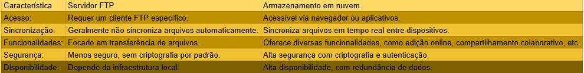

Exemplos de Equipamentos e Configurações de redes:
Roteador:
Função: Direciona pacotes de dados entre redes diferentes, conectando redes locais à internet.
Configuração: A configuração geralmente envolve definir o endereço IP, máscara de sub-rede, gateway padrão e, em muitos casos, a configuração de NAT e regras de firewall.
Switch:
Função: Conecta dispositivos dentro da mesma rede, permitindo a comunicação entre eles.
Configuração: A configuração pode incluir a criação de VLANs, configuração de portas (como modo de acesso ou trunking) e gerenciamento de tráfego.
Access Point (Ponto de Acesso):
Função: Extende a cobertura da rede sem fio, permitindo que dispositivos se conectem à rede.
Configuração: Configuração de SSID, segurança (WPA2, WPA3), canal e potência do sinal.
Modem:
Função: Converte sinais digitais em analógicos e vice-versa, permitindo a conexão à internet.
Configuração: Configuração de parâmetros como tipo de conexão (PPPoE, DHCP) e autenticação com o provedor de internet.
Firewall:
Função: Protege a rede monitorando e controlando o tráfego de entrada e saída.
Configuração: Definição de regras de acesso, perfis de segurança e monitoramento de logs.
O que é um servidor FTP?
Um servidor FTP (File Transfer Protocol) é um computador conectado à internet que oferece um serviço específico: o compartilhamento de arquivos. Ele permite que usuários enviem e recebam arquivos para e de outros computadores conectados à rede.
Quais são suas principais funcionalidades em uma rede?
Compartilhamento de arquivos: A principal função é permitir que vários usuários acessem e compartilhem arquivos em um local centralizado.
Transferência de arquivos: Facilita o envio e recebimento de arquivos entre diferentes computadores.
Gerenciamento de arquivos: Permite criar, editar, excluir e organizar arquivos no servidor.
Por que o FTP foi amplamente utilizado no passado? Quais foram as vantagens e limitações dessa tecnologia?
O FTP foi amplamente utilizado por ser um protocolo simples e eficiente para transferência de arquivos. As principais vantagens eram:
- Facilidade de uso: Era relativamente fácil configurar e utilizar.
- Velocidade: Em muitas situações, oferecia boas velocidades de transferência.
- Ampla compatibilidade: Funcionava em diversos sistemas operacionais.
No entanto, o FTP apresentava algumas limitações:
- Segurança: Não possuía mecanismos de autenticação e criptografia robustos, tornando-o vulnerável a ataques.
- Gerenciamento: A administração de um servidor FTP podia ser complexa, especialmente em ambientes maiores.
- Funcionalidades limitadas: Se comparado aos serviços de armazenamento em nuvem, o FTP oferecia funcionalidades mais básicas.
Quais as principais diferenças entre um servidor FTP e serviços de armazenamento em nuvem como Google Drive ou OneDrive?
